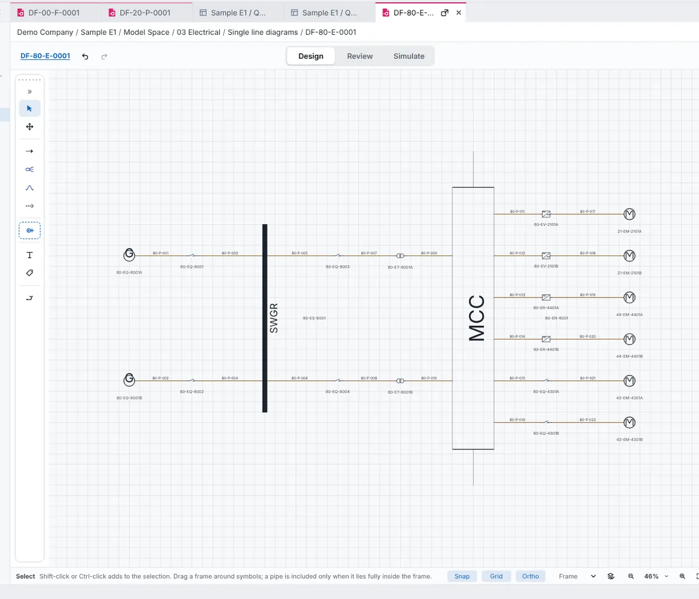
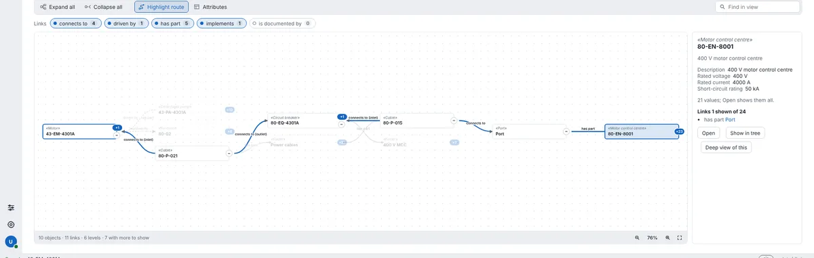
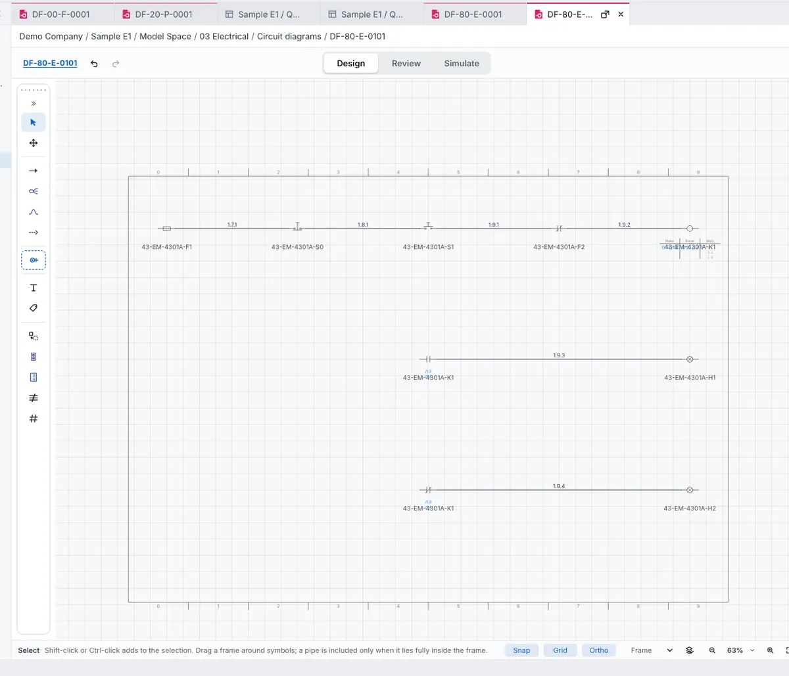
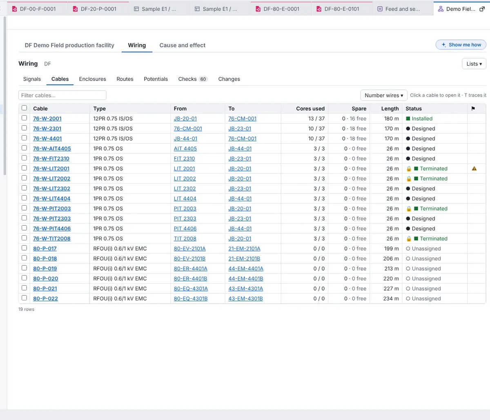
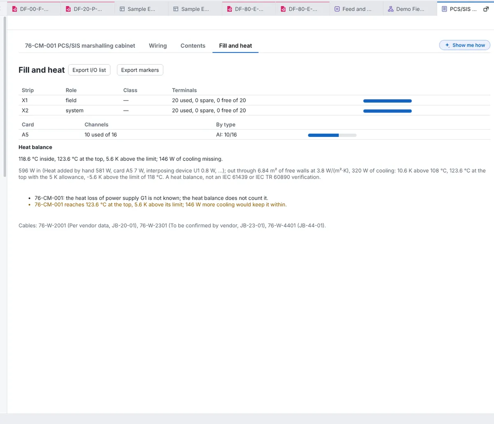
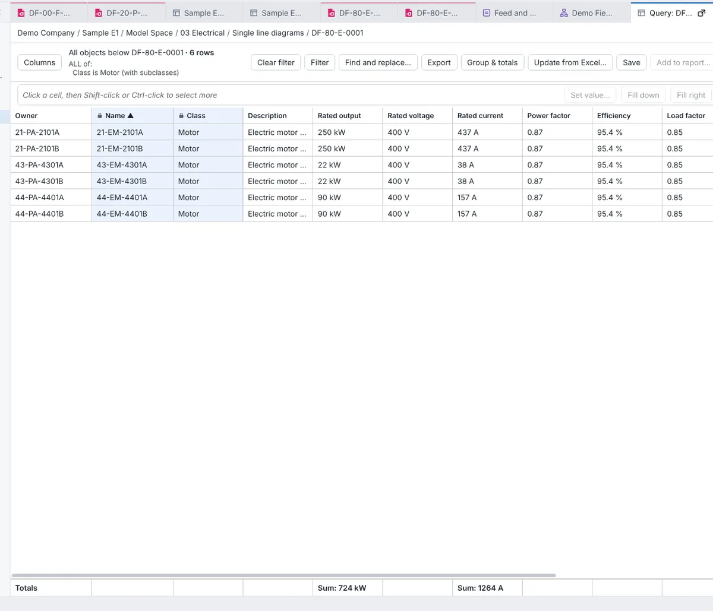

Electrical design on the same plant model.
In E1, the electrical engineer works on the same objects as process and instrumentation: the motor of a pump, the cabinet in an equipment room, the cable between them. Single line diagrams, circuit diagrams, the cable schedule and the electrical documents are made from that model, so plant power is not a separate island of tools.
Single line diagrams where every line is a real cable
In E1, a single line diagram is a 2D space whose diagram type is Single line diagram. Field devices, junction boxes and cabinets are objects of the model, and every line drawn between them with Cable is a real cable.
- Every line is a real cable
- Devices are model objects
- Animate current
Each cable you draw has its tag, the project's default cable type for its two ends and its cores. It is the same cable the cable schedule and the wiring show. Default cable types are set once in the project's wiring settings: field cable, multicore, cabinet to cabinet and feeder.
Propose cables designs the cable network for new devices in one step. For every field device on the sheet that has signals and no field cable, E1 proposes a field cable to the nearest junction box of its area and segregation class with room on a strip. Free pairs of existing multicores are used first; a new multicore or junction box is proposed only where none fits. Nothing changes until you choose Apply.
Animate current sets a single line diagram in motion: the current runs from the transformers or generators through the switchboard to the motors, coloured by voltage level. Open a breaker and its cable turns dead and the motor reads No supply. Nothing in the model changes.

Deep view: follow a motor to its cable, starter and breaker
Deep view shows an object and every object associated with it, as a data model of cards and links, like an object diagram rather than a drawing. You open it layer by layer with +1, or all at once with Expand all, until nothing more is linked.
- Every link, as cards
- Highlight route
- Find in view
From motor 43-EM-4301A you follow its power cable 80-P-021 to circuit breaker 80-EQ-4301A, the cable from there to the motor control centre 80-EN-8001, and the pump it drives.
Click a card to see its values and links, with Open, Show in tree and Deep view of this. Highlight route draws the way from one card to another in bold while everything else fades; Find in view outlines the cards whose tag, name, class or value holds your text; a chip for each kind of link shows or hides those links.
- Opened from the object window's Deep view tab, or from a symbol on a 2D space: right-click → Open ▸ Deep view.

Circuit diagrams and motor starter circuits
In E1, each symbol on a circuit diagram is one function of a device: a contactor's coil, its contacts and main poles, a pushbutton's contact, a pilot light's lamp.
- One symbol per function
- Motor starter circuits
- Short circuits found
The device is one object owned by its cabinet, and its catalog item gives its functions with their terminal markings (A1 A2, 13 14, 21 22). Every drawn function has an address by page and column, such as /1.4. Under a contactor's coil E1 shows the contact image: each contact with its points and where it is drawn. E1 works these out from the drawings, so they are never out of date.
Right-click a motor and choose Make starter circuit…: E1 draws the starter on a new page of its cabinet's circuit document, with the motor protection breaker, contactor and overload relay in the three phases, the control circuit with its fuse, Stop, Start and pilot lights, the motor's terminals and its power cable. The breaker, contactor and overload relay are the catalog's smallest that take the motor's current. Pick several motors to make all their starters at once.
Terminals, cables and wire numbers are drawn on the same pages. E1 finds two potentials joined by a wire (a short circuit), more wires across a cable than it has cores, and contact points with no wire.

Cable schedule, cable routes and lengths
In E1, a cable made from a cable type in the catalog gets its cores at once, and each core is landed on a terminal chosen from a tree, never typed.
- Cores from the cable type
- Cable schedule
- Wire move lists
The cable schedule is the Cables tab of the Wiring page: one row per cable with its type, its two ends, the cores used and spare, its length and its status. It exports to Excel or PDF with the wire list, termination list, junction box schedule and I/O list, all made from the model when you ask for them.
Route segments are cable trays, ladders, conduits, ducts and trenches with their capacity and fill limit. A cable is routed through segments in order; each segment's fill adds up its cables' cross-sections and the cable's routed length adds up the segments. A cable has a length by hand and a length from 3D, and E1 reports when they differ by more than the project's tolerance.
- Wire numbers from the project's pattern, with a preview of every change.
- Construction status on every core and terminal: Designed, Issued for construction, Installed, Terminated, Loop-checked, As-built or To be removed.
- After issue, a change becomes a wire move list of what to lift and what to land, terminal by terminal.

Cabinets, MCCs, potentials and heat balance
In E1, a cabinet is two objects: its location in Areas and the enclosure in Assets, which holds rails, terminal strips, cards, interposing devices, power supplies, earth bars and cable entries. An MCC and a distribution board are enclosures too.
- Cabinets and MCCs
- Potentials
- Heat balance
The Potentials tab lists every net such as +24V across enclosures, with its terminals, fuses and the supply's load against its rated current. The net view shows each fused terminal with its rating and the load it feeds; a missing value shows as ?, never as zero.
A cabinet's Fill and heat page shows each strip as a bar of used, spare and free terminals, and the heat balance from physics: the heat its devices give off at their load against what its free walls, a fan and a cooling unit take away. The result is the inside temperature, the temperature at the top, the margin to the cabinet's limit and the cooling still missing. Markers for wires, terminals and cables export for the printer's software.

Electrical load list and electrical documents
In E1, Alex with the Electrical engineer skill writes the electrical load list, the cable schedule and the Ex equipment list of a 2D space into one Excel workbook.
- Electrical load list
- Written by Alex
- One Excel workbook
Export load list and cable schedule (Excel) gives the load list with the maximum demand, the cable schedule with capacity and voltage drop, and the Ex equipment list. Alex judges cables with the ratings of IEC 60364-5-52 and a voltage drop of 3 % for lighting and 5 % for other uses. When a simulator in Alex has run an electrical load flow, short circuit, motor start or arc flash on the open 2D space, its results appear as cards with the method, inputs, assumptions and result tables.
Make documents… on a cabinet, a folder or the project makes the electrical document set in one change: terminal strip diagrams, the cable block diagram, a cable diagram per cable, the wire list, the I/O list, the device list, the parts list and the table of contents, and for the project the potential overview. They are revised and issued like any document.

Questions engineers ask.
Is a cable on the single line diagram the same as in the cable schedule?
Yes. Every line drawn with Cable on a single line diagram is the cable object itself, with its tag, type and cores. The cable schedule and the wiring show the same cable.
How does E1 choose the starter components for a motor?
From the motor's rated output or current: the breaker, contactor and overload relay are the catalog's smallest that take that current. You choose the cabinet and the control voltage in the dialog.
Can E1 work out cable lengths from a 3D model?
A cable keeps a length by hand and a length from 3D, written through E1's API. E1 uses the length by hand when there is one and reports when the two differ by more than the project's tolerance.
Can I import the wiring of an existing plant or a vendor panel?
Yes. A termination list in CSV or Excel is imported through Alex with a preview first. The cores come in as fixed, so the new design is made around them.
Does E1 calculate cabinet heat dissipation?
Yes. The Fill and heat page works out the inside and top temperature from the devices' heat loss, the free walls, a fan and a cooling unit, and says how much cooling is missing.
Which electrical documents can E1 make?
Terminal strip diagrams, cable block and cable diagrams, wire list, I/O list, device list, parts list, table of contents and the potential overview, plus the cable schedule and the other wiring lists in Excel and PDF.
In the user guide
- Deep view
- Draw the cable network on a single line diagram
- Propose cables on a single line diagram
- Circuit diagrams: devices with their functions
- Circuit diagrams: starter circuits
- The cable schedule
- Cable routes: trays, conduits and fill
- Cabinet fill and heat balance
- Circuit diagrams: making the documents